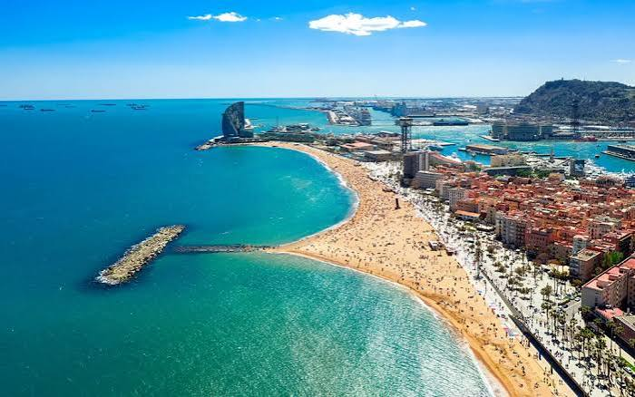

Where the sun meets the sea
Spain is a country in southwestern Europe, famous for its sunny beaches, beautiful cities, and rich history. Its landscape includes mountains, forests, green valleys, and long coastlines along the Mediterranean Sea and the Atlantic Ocean. People from all over the world visit Spain to enjoy its culture, architecture, and festivals. Spain is also famous for tapas, paella, flamenco, and football.
